Izgradnja terena
Priprema podloge, nivelacija, drenaža i kompletno formiranje travnate sportske površine.
Profesionalni travnati sportski tereni
SPORT-GRADNJA Pirot je specijalizovana za travnate terene, proizvodnju i postavljanje busena, nivelaciju, zalivanje, sanaciju i redovno održavanje zelenih sportskih površina.
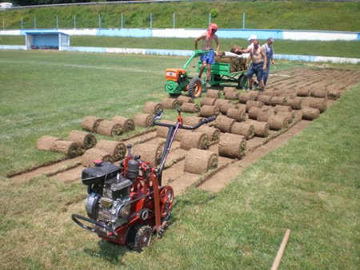
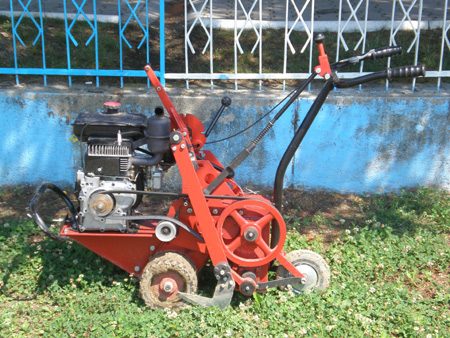
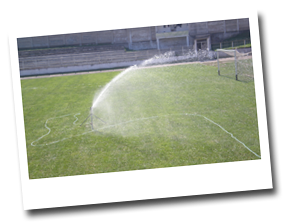
O kompaniji
Bavimo se izgradnjom, rekonstrukcijom, saniranjem i održavanjem sportskih terena i travnatih površina. Fokus je na kvalitetnoj pripremi podloge, pravilnoj ugradnji busena i dugoročnom održavanju terena.
Naš rad obuhvata fudbalske terene, pomoćne terene, školske i rekreativne površine, kao i sve zelene površine koje zahtevaju preciznost, kvalitetnu drenažu, nivelaciju i negu.
Šta radimo
Priprema podloge, nivelacija, drenaža i kompletno formiranje travnate sportske površine.
Sečenje, rolanje, transport i ugradnja prirodnog travnatog busena.
Saniranje oštećenih delova terena, popravka neravnina i obnova travnatog pokrivača.
Košenje, zalivanje, aeracija, prihrana i redovna nega terena tokom sezone.
Način rada
Svaki projekat počinje pregledom lokacije i planiranjem radova. Nakon pripreme podloge, busen se seče, doprema, postavlja i neguje dok teren ne bude spreman za korišćenje.
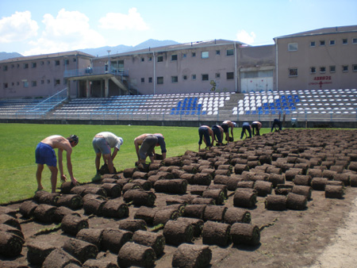
Galerija
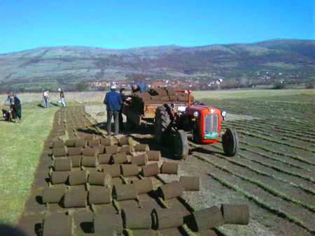
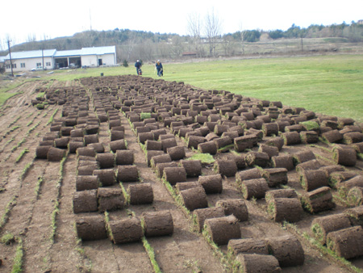
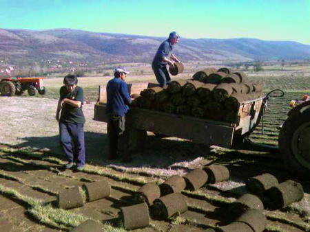
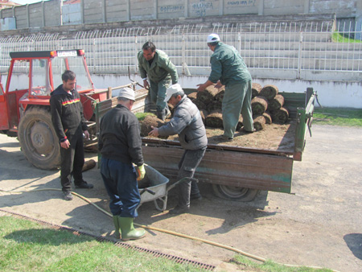
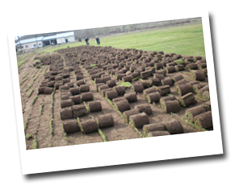
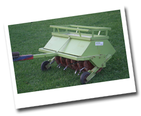
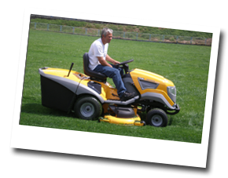
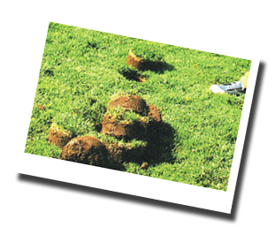
Reference
Radovi i održavanje travnatih površina za profesionalne i rekreativne sportske objekte.
Kontakt
Pošaljite upit za procenu, rekonstrukciju ili održavanje travnate površine. Tim SPORT-GRADNJA Pirot može da predloži optimalan način rada u skladu sa stanjem terena.
Adresa: Pirot, Srbija
Telefon: +381637761140
Email: dragan.zoraja@gmail.com
Pošalji email Kontakt podaci su ažurirani.